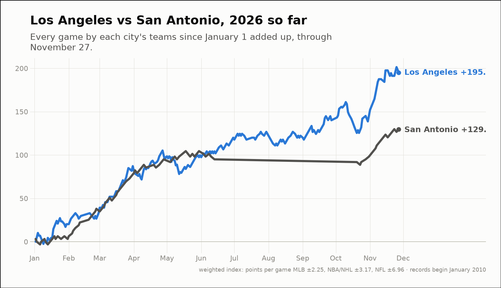

Los Angeles vs San Antonio: who's had the better 2026?
Dodgers/Lakers/Ducks/Rams against Spurs, through November 27
- Los Angeles
- Los Angeles: Dodgers/Lakers/Ducks/Rams — 205-139, +195.1 weighted, 2nd of 49
- San Antonio
- San Antonio: Spurs — 66-25, +129.8 weighted, 4th of 49
- The gap
- Los Angeles by 65.2
- November 27
- Spurs 99, Lakers 96
- Meetings in 2026
- 3 — Los Angeles 0, San Antonio 3
